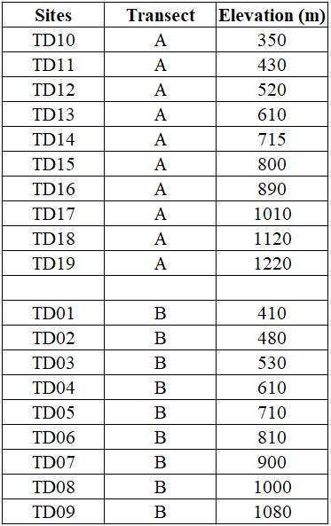

BEST-Chebaling
Mt. Chebaling (车八岭)
The Chebaling National Nature Reserve in Guangdong Province is located in the southeast of Shixing County (114° 09 04 “- 114° 16” E, 24°40 × 29 “- 24 °46” N), and has a total area of 7545 ha. The reserve was established in 1981, upgraded to a national nature reserve in 1988, joined the China MAB Reserve Network in 1995, and joined the UNESCO World Biosphere Reserve Network in 2007.
The geological structure of the Chebaling reserve belongs to the South China Folded System, with relatively higher altitude for the northwest part and lower altitude for the southeast part. The mountain peak is Tianpingjia, with an altitude of 1,256 m. The lowest place is at Zhangdongshui, with an altitude of 330 m.
Chebaling is dominated by a subtropical wet monsoon climate. It is wet and warm throughout the year, with ample sunshine and hydrothermal resources. The annual average temperature is 19.6℃. The highest temperature is 38.4℃ and the lowest is -5.5℃. The total precipitation of this reserve ranges from 1,150–2,126 mm. The rainy season of a year lasts from March till to August, and dry season from September to February of the next year. The annual evaporation is 1,530 mm. The annual relative humidity is 79%.

Vegetation and Flora
The nature reserve is located in the transitional zone from the south-subtropical to the mid-subtropical, and covered by subtropical transitional flora, which is part of the sub flora of southern China. There are four vegetation groups, five vegetation types, nine vegetation subtypes, 22 formations and 54 communities.
Chen et al. (1992) considered that mid-subtropical evergreen broad-leaved forest is the zonal vegetation and the main forest type of Chebaling reserve, distributed in the hills and mountains with the elevation range from 300 m to 900 m, covering an area of 3075 ha, and accounting for 41% of the nature reserve. The community is evergreen, diverse in species composition and complex in hierarchical structure. The evergreen broad-leaved tree species of the family Cyperidae, Camphor family, Tea Family, Hamamelinaceae and Magnoliaceae are the dominant species in the stand.
The mixed forest composed mainly of Pinus massoniana with broad-leaved tree species is distributed in the mountains at elevation from 350 m to 850 m, with an area of 2570 ha, accounting for 34.1% of the total area of this reserve. The mountains, ridges and peaks above 900 m, cover 1245 ha, accounting for 34.1% of the area of the reserve. Due to the influence of temperature, humidity, wind, soil and other factors, this area is mainly covered by mountainous shrubs dominated by short plants such as Rhododendron cavaleriei, R. simsii, Vaccinium bracteatum, Miscanthus, etc. It is characterized by simple community structure and high coverage (> 90%) .

Research sites of BEST network
In 2018, nighteen 40 m × 40 m plots along an elevational gradient were set up from 270 m to 1470 m above the sea level in this mountain. The plots were set at intervals of ~100 m in elevation. Within each plot, all woody stems with ≥ 1 cm DBH were tagged and identified to species. There were 11773 individuals with DBH ≥ 1 cm recorded, belonging to 53 families, 103 genera and 153 species.

Principal Investigator
Chengjin Chu (储诚进): chuchjin@mail.sysu.edu.cn
Research Team:
Buhang Li (Sun Yat-Sen University)
Youshi Wang (Sun Yat-sen University)
Zufei Shu (Guangdong Chebaling National Nature Reserve)
Ruiqi Wang (Sun Yat-sen University)
Zhi Wang (Sun Yat-sen University)
Selected Publications
- Buhang Li，Zhihong Wu, Yue Bin, Ronggao Xiao, Xiangjin Song, Zhufei Shu, Chengjin Chu. The Chebaling central subtropical evergreen broadleaved forest dynamic plot: Species composition and community structure[M]. Guangdong Science and Technology Press, Guangzhou. 2020.
Site Support
This site has been supported by:
National Natural Science Foundation of China
Chebaling National Nature Reserve
School of Life Sciences, Sun Yat-sen University
Forestry Administration of Guandong Province